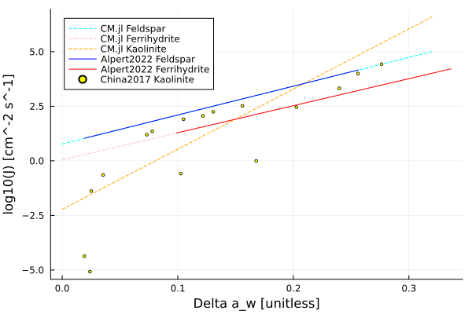

Ice Nucleation
Ice nucleation describes the process of forming ice crystals from aerosol particles and/or liquid droplets. The IceNucleation.jl module includes:
- the parameterization of activation of dust aerosol particles into ice crystals via deposition of water vapor,
- water activity based parameterization of immersion freezing,
- water activity based parameterization of homogeneous freezing,
- parametrization of temperature-dependent aerosol-independent ice nucleating particles concentration for immersion freezing.
The parameterization for deposition on dust particles is an implementation of the empirical formulae from [43] and is valid for two types of dust particles: Arizona Test Dust and desert dust from Sahara. The parameterization for immersion freezing is an implementation of [32] and is valid for droplets containing sulphuric acid. The parameterization for homogeneous freezing is an implementation of [40]. The parametrization for ice nucleating particles concentration for immersion freezing is an implementation of [44].
Future work includes refining the homogeneous freezing parameterization and modeling the competition between freezing modes.
Activated fraction for deposition freezing on dust
There are 2 parameterizations from [43] available: one which calculates the activated fraction and one which calculates nucleation rate. The activated fraction parameterization follows eq. (3) in the paper.
\[\begin{equation} f_i(S_i) = exp[a(S_i - S_0)] - 1 \end{equation}\]
where
- $f_i$ is the activated fraction (the ratio of aerosol particles acting as ice nuclei to the total number of aerosol particles),
- $a$ is a scaling parameter dependent on aerosol properties and temperature,
- $S_i$ is the ice saturation ratio,
- $S_0$ is an empirically derived threshold ice saturation ratio.
The other parameterization models the nucleation rate of ice as an empirical function of ice saturation ratio, see eq. (5) in [43].
\[\begin{equation} \frac{dn_{ice}}{dt} = N_{aer} a \frac{dS_i}{dt} \end{equation}\]
where:
- $N_{aer}$ is the number of available aerosol/ice nuclei,
- $a$ is a scaling parameter dependent on aerosol properties and temperature,
- $S_i$ is the ice saturation ratio (the ratio of water vapor partial pressure and the water vapor partial pressure at saturation over ice).
Limited experimental values for the free parameters $a$ and $S_0$ can be found in [43]. These free parameters are strongly dependent on aerosol properties and temperature.
For $f_i$ values above 0.08 or $S_i$ between 1.35 and 1.5, freezing occurs in a different ice nucleation mode (either a second deposition or other condensation type mode).
Water Activity Based Deposition Nucleation
The water activity based deposition nucleation model is analagous to ABIFM for immersion freezing (see ABIFM for Sulphuric Acid Containing Droplets section below). It calculates a nucleation rate coefficient, $J$, which describes the number of ice nuclei formed per unit area of INP per unit time dependent on the water activity criterion, $\Delta a_w$, and aerosol type. The form of this empirical parameterization is taken from [32]. Currently, we have parameters for kaolinite, feldspar, and ferrihydrite derived from [45] and [46].
\[\begin{equation} log_{10}J_{deposition} = m \Delta a_w + c \end{equation}\]
where $J$ is in units of $cm^{-2}s^{-1}$. Note that our source code returns $J$ in SI units. $m$ and $c$ are aerosol dependent coefficients. They will have different values than those for ABIFM.
Water activity based deposition nucleation plot
The following plot shows $J$ as a function of $\Delta a_w$ as compared to figure 6 in Alpert et al 2013 and figure S5 in supplementary material of China et al 2017. Intent of this plot is to prove that $J$ is correctly parameterized as a function of $\Delta a_w$, with no implications of whether $\Delta a_w$ is properly parameterized. For more on water activity, please see above section.
include("plots/activity_based_deposition.jl")"/home/runner/work/CloudMicrophysics.jl/CloudMicrophysics.jl/docs/build/water_activity_depo_nuc.svg"
Cooper (1986) Ice Crystal Number
The P3 scheme as described in [24] follows the implementation of [47] where a parameterization from Cooper 1986 was used. Number of ice crystals formed is derived from ambient temperature.
\[\begin{equation} N_i = 0.005 exp[0.304(T_0 - T)] \end{equation}\]
Where $T_0 = 273.15K$ and $T$ is the ambient temperature. Because the parameterization is prone to overpredict at low temperatures, $N_i = N_i(T = 233K)$ for all values of $N_i$ at which $T < 233K$.
Immersion Freezing
ABIFM for Sulphuric Acid Containing Droplets
Water Activity-Based Immersion Freezing Model (ABFIM) is a method of parameterizing immersion freezing inspired by the time-dependent classical nucleation theory (CNT). More on CNT can be found in [48]. The nucleation rate coefficient, $J$, describes the number of ice nuclei formed per unit area per unit time and can be determined by the water activity, $a_w$. This parameterization follows [32]. In this model, aerosols are assumed to contain an insoluble and soluble material. When immersed in water, the soluble material diffuses into the liquid water to create a sulphuric acid solution.
Using empirical coefficients, $m$ and $c$, from [32], the heterogeneous nucleation rate coefficient in units of $cm^{-2}s^{-1}$ can be determined by the linear equation
\[\begin{equation} log_{10}J_{ABIFM} = m \Delta a_w + c \end{equation}\]
A parameterization for $\Delta a_w$ can be found in Common.jl. More information on it can be found in the Water Activity section. $m$ and $c$ here are different from the $m$ and $c$ parameters for deposition nucleation.
Our source code for the nucleation rate coefficient returns $J$ in base SI units.
Once $J_{ABIFM}$ is calculated, it can be used to determine the ice production rate, $P_{ice}$, per second via immersion freezing.
\[\begin{equation} P_{ice} = J_{ABIFM}A(N_{aer} - N_{ice}) \end{equation}\]
where $A$ is surface area of an individual ice nuclei, $N_{aer}$ is total number of ice nuclei, and $N_{ice}$ is number of ice crystals already in the system.
ABIFM Example Figures
The following plot shows $J$ as a function of $\Delta a_w$ as compared to figure 1 in Knopf & Alpert 2013. Solution droplets were assumed to contain a constant 10% wt. sulphuric acid. Changing the concentration will simply shift the line, following Knopf & Alpert's parameterization. As such, this plot is just to prove that $J$ is correctly parameterized as a function of $\Delta a_w$, with no implications of whether $\Delta a_w$ is properly parameterized. For more on water activity, please see above section.
include("plots/KnopfAlpert2013_fig1.jl")"/home/runner/work/CloudMicrophysics.jl/CloudMicrophysics.jl/docs/build/Knopf_Alpert_fig_1.svg"The following plot shows J as a function of temperature as compared to figure 5a in Knopf & Alpert 2013.
include("plots/KnopfAlpert2013_fig5.jl")CairoMakie.Screen{SVG}
Note that water activity of the droplet was assumed equal to relative humidity so that:
\[\begin{equation} a_{w} = \frac{p_{sat}(T = T_{dew})}{p_{sat}(T)} \end{equation}\]
where T_dew is the dewpoint (in this example, it is constant at -45C).
For the same figure in Knopf & Alpert, the mixed-phase cloud uses T{dew} = T. We are unsure when to use constant T{dew} or set it equal to T.
It is also important to note that this plot is reflective of cirrus clouds and shows only a very small temperature range. The two curves are slightly off because of small differences in parameterizations for vapor pressures.
Bigg (1953) Volume and Time Dependent Heterogeneous Freezing
Heterogeneous freezing in the P3 scheme as described in [24] follows the parameterization from [49] with parameters from [50]. The number of ice nucleated in a timestep via heterogeneous freezing is determined by
\[\begin{equation} N_{ice} = N_{liq} \left[ 1 - exp(-B V_{l} \Delta t exp(aT_s)) \right] \end{equation}\]
where a and B are parameters taken from [50] for rainwater as 0.65 and 2e-4 respectively. T_s is the difference between 273.15K and ambient temperature. V_l is the volume of droplets to be frozen and \Delta t is timestep in which freezing occurs.
Homogeneous Freezing
Homogeneous Freezing for Sulphuric Acid Containing Droplets
Homogeneous freezing occurs when supercooled liquid droplets freeze on their own. Closly based off [40], this parameterization determines a homoegneous nucleation rate coefficient, $J_{hom}$, using water activity. The change in water activity, $\Delta a_w(c,T,P)$, can be found in Common.jl and is described in the Water Activity section. It is then used to empirically calculate $J_{hom}(\Delta a_w)$ with units of $cm^{-3}s^{-1}$.
The nucleation rate coefficient is determined with the cubic function from [40]
\[\begin{equation} logJ_{hom} = -906.7 + 8502 \Delta a_w - 26924(\Delta a_w)^2 + 29180(\Delta a_w)^3 \end{equation}\]
This parameterization is valid only when $0.26 < \Delta a_w < 0.36$ and $185K < T < 235K$.
Homogeneous Freezing Example Figures
Here is a comparison of our parameterization of $J_{hom}$ compared to Koop 2000 as plotted in figure 1 of [51]. Our parameterization differs in the calculation of $\Delta a_w$. We define water activity to be a ratio of saturated vapor pressures whereas Koop 2000 uses the difference in chemical potential.
include("plots/HomFreezingPlots.jl")CairoMakie.Screen{SVG}
It should be noted that the Koop 2000 parameterization is only valid for temperatures up to 240K and a temperature-dependent max pressure. The max valid pressure becomes negative around 237K, so the Koop 2000 parameterizaiton should not be valid beyond 237K. For this reason, we limit the curve from [51] to 237K.
Multiple sulphuric acid concentrations, $x$, are plotted since the actual concentration used in literature values is unspecified.
Spichtinger plot may be under the condition that x = 0 (pure liquid droplets). The current parameterization in CloudMicrophysics.jl is not valid for \Delta a_w values that are obtained from pure water droplets. Though CliMA lines look far from the Spichtinger 2023 line, the lines seem to move closer as x approaches 0.
Linear fit homogeneous freezing
To avoid complications in extrapolating the Koop 2000 parameterization outside of the valide temperature range, a linear fit was created.
include("plots/linear_HOM_J.jl")CairoMakie.Screen{SVG}
Water Activity Based vs P3 Ice Nucleation Parameterizations
The water activity based models are compared with P3 ice nucleation parameterizations as described in [24] using an adiabatic parcel model with depositional growth. The first row of plots shows deposition nucleation; the second row shows heterogeneous freezing; the last row shows homogeneous freezing.
include("../../parcel/Example_P3_vs_activitybased.jl")CairoMakie.Screen{SVG}
For the activity based deposition ice nucleation model (ABDINM):
- Green corresponds to feldspar,
- Orange corresponds to ferrihydrite,
- Magenta corresponds to kaolinite.
We note that the P3 deposition parameterization shows a significantly greater ICNC at all times in the simulation. This is expected because the parameterization does not account for the number of available INP.
For the activity based immersion freezing model (ABIFM):
- Green corresponds to desert dust,
- Orange corresponds to illite,
- Magenta corresponds to kaolinite.
The P3 heterogeneous parameterization also shows much more ICNC than any of the ABIFM runs. It should be noted that the P3 parameterization does not distinguish between immersion freezing, contact freezing, etc.
The P3 scheme allows homogeneous freezing to freeze all droplets at temperatures equal to or less than 233.15K. No homogeneous freezing occurs at warmer temperatures.
INP Concentration Frequency
With this parametrization, the concentration of ice nucleating particles (INPs) is found based on the relative frequency distribution, which depends on the temperature, but does not depend on aerosol types. It is based on [44] and is derived from measurements, for marine data sets. It is a lognormal distribution, described by
\[\begin{equation} D(\mu, \sigma^2) = \frac{1}{\sqrt{2 \pi} \sigma} exp \left(- \frac{[ln(a \cdot INPC) - \mu(T)]^2}{2 \sigma^2} \right), \end{equation}\]
where $T$ is the temperature in degrees Celsius, $INPC$ is the INP concentration in m$^{-3}$ and the temperature-dependent mean $\mu(T)$ is given by
\[\begin{equation} \mu(T) = ln(-(b \cdot T)^9 \times 10^{-9}) \end{equation}\]
$\sigma^2$ is the variance, $a$ and $b$ are coefficients. The parameters defined in [44] for marine data sets are $\sigma=1.37$, $a=1$ m$^3$, $b=1$/C.
Our implementation uses base SI units and takes $T$ in Kelvin.
The following plot shows the relative frequency distribution for INPCs, as a function of temperature (the same as figure 1 in [44]).
include("plots/Frostenberg_fig1.jl")"/home/runner/work/CloudMicrophysics.jl/CloudMicrophysics.jl/docs/build/Frostenberg_fig1_T16.svg"The following plot shows the relative frequency distribution for INPCs at the temperature $T=-16 C$.